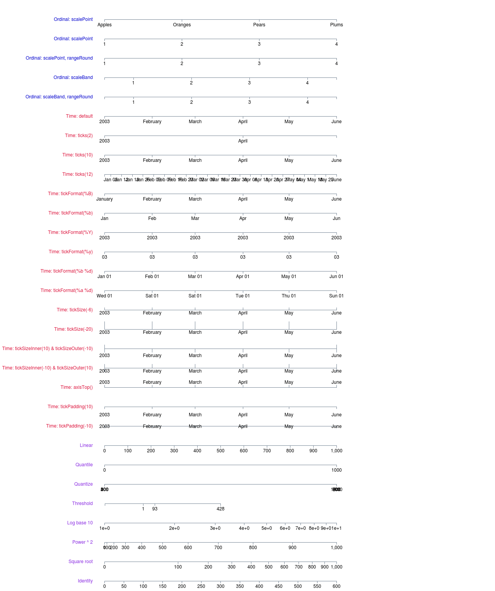

Ejes — d3-axis¶
El componente de D3 axis renderiza marcas de referencia para escalas (ver Escalas — d3-scale).
Funciones¶
D3 provee 4 métodos, con sus nombres indicando su alineamiento, para crear un generador de eje: d3.axisTop([scale]), d3.axisRight([scale]), d3.axisBottom([scale]) and d3.axisLeft([scale]). Un eje alineado arriba (axisTop) tiene los ticks dibujados debajo del eje. Un eje alineado abajo (axisBottom) es horizontal y tiene sus ticks dibujados debajo del eje. Un eje alineado a la izquierda (axisLeft) es vertical y tiene sus ticks alineados a la izquierda del eje, y el eje alineado a la derecha (axisRight) en el lado opuesto con los ejes dibujados en el lado exterior.
Todas admiten una escala como primer parámetro, pero esta también puede ser añadida mediante la función axis.scale([scale]).
Para añadir el eje a una selección usamos la función selection.call([axis]).
Paso a paso¶
Input
<!-- Creamos una figura SVG con dimensiones -->
<svg width="100%" height="40">
<g class="eje"> <!-- Dentro ubicamos un grupo -->
</svg>
<style>
.eje {
fill: none;
stroke: #aaa;
}
</style>
<script>
// Creamos una escala
var scale = d3.scaleLinear()
.domain([0, 1000])
.range([0, 600]);
// Creamos un axis pasándole la escala
var axis = d3.axisBottom(scale)
// Seleccionamos el grupo dentro del svg
d3.select('.eje') // Lo movemos a la derecha
.attr("transform", "translate(40, 0)")
.call(axis); // Llamamos al eje para insertarlo
</script>
Output
Si observamos el código HTML renderizado por D3, veremos que cada tick en el eje es un grupo en SVG con el siguiente código.
<g class="tick" opacity="1" transform="translate(240.5,0)">
<line stroke="#000" y2="6"></line>
<text fill="#000" y="9" dy="0.71em">400</text>
</g>
Nota
El elemento g es un contenedor usado para agrupar objetos. Las transformaciones aplicadas al elemento g son realizadas sobre todos los elementos hijos del mismo. Los atributos aplicados son heredados por los elementos hijos. Además, puede ser usado para definir objetos complejos que pueden luego ser referenciados con el elemento <use>.
Cambiar el color de un eje¶
Veamos un ejemplo en el que cambiamos el color de un eje, el cual nos servirá para observar más de cerca los elementos HTML renderizados como ejes por D3js.
Input
<style>
.ejeVerde line{
stroke: green;
}
.ejeVerde path{
stroke: green;
}
.ejeVerde text{
fill: green;
}
</style>
<div id="container"></div>
<script>
var scale = d3.scaleLinear()
.domain([0, 1000])
.range([0, 600]);
var axis = d3.axisTop(scale);
var svg = d3.select("#container")
.append("svg")
.attr("width", "100%")
.attr("height", 40)
.append("g")
.attr("class", "ejeVerde")
.attr("transform", "translate(40, 20)")
.call(axis)
</script>
Output
Como puedes observar en el código anterior, debemos establecer 3 propiedades CSS;
- La propiedad
strokedel elementopath. Este elemento se encarga de dibujar la línea horiontal a lo largo de todo el eje. - La propiedad
strokedel elementoline. Este se encarga de las líneas verticales que van desde elpathhasta el número. - La propiedad
filldel elementotext. Este se encarga de los números.
Ejemplos de escalas¶
Puedes ampliar la imagen y ver el código fuente que la renderiza en este enlace.
